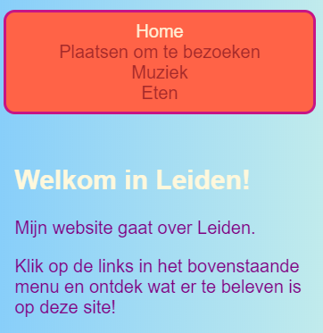
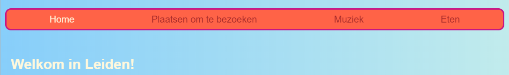

Een responsive (reagerende) website is er een die zich aanpast aan de schermgrootte, zodat deze er altijd fantastisch uitziet, of je hem nu bekijkt op een computer, mobiele telefoon of tablet. Laten we je menu responsive maken!
Je begint met de standaard stijlen: dit is je default gedrag.
nav ul {
padding: 0.5em;
display: flex;
flex-direction: column;
}
nav ul li {
text-align: center;
list-style-type: none;
margin-right: 0.5em;
margin-left: 0.5em;
}
Met de bovenstaande CSS-code is je menu het meest geschikt voor kleine schermen. Dit wordt mobile-first (mobiel eerst) ontwikkeling genoemd.

@media all and (min-width: 1000px) {
nav ul {
flex-direction: row;
justify-content: space-around;
}
}
De eerste coderegel hierboven controleert hoe groot het browservenster is. Als het venster 1000 pixels breed of breder is, worden alle stijlregels in het blok toegepast.
flex-end in plaats van
space-around?
Je kan elke gewenste CSS-regel in blokken zoals deze stoppen om verschillende stijlen voor verschillende schermformaten te definiëren. Het is vooral handig als je later CSS grid layouts uitvoert!